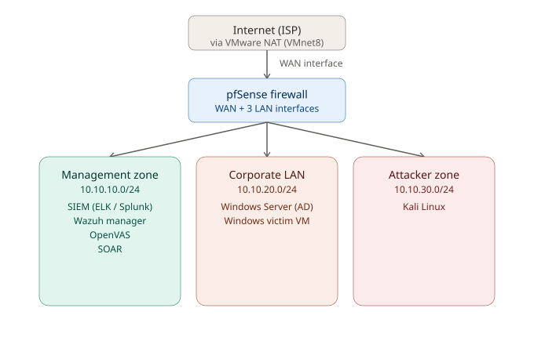

Phase 2 - Design
PHASE 2 — Design¶
Goal: Design the network and naming scheme on paper before building anything.
2.1 Network Zones¶
Enterprise SOCs separate networks into zones so an attacker in one zone can't freely reach another. You'll simulate this with VMware's virtual networks (VMnet) and pfSense as the router between them.

Internet reaches pfSense's WAN interface, which routes out to three isolated LAN interfaces — one per zone below.
| Zone | VMware Network | Subnet | Who lives here |
|---|---|---|---|
| WAN (simulated internet) | NAT (VMnet8) | Reserved DHCP lease | pfSense's WAN interface only |
| Management | Host-only (VMnet1) | 10.10.10.0/24 | SIEMs, Wazuh, OpenVAS, SOAR, management endpoint — the tools you use |
| Corporate LAN | Host-only (VMnet2) | 10.10.20.0/24 | Windows Server (AD), Windows victim VM |
| Attacker Zone | Host-only (VMnet3) | 10.10.30.0/24 | Kali |
pfSense gets one virtual network adapter per zone (4 total) and acts as the router/firewall between all of them — this is exactly how a real network's edge firewall works, just scaled down.
2.2 VM Inventory & IP Address Plan¶
This is the authoritative, as-built reference — kept in sync with actual builds, not just the original plan.
| VM Name | Rolee | RAM | vCPU | Disk | IP Address | OS |
|---|---|---|---|---|---|---|
| SOC-FW-pfSense | Firewall/router | 2GB | 2 | 20GB | WAN: reserved DHCP lease (10.10.40.101) · Mgmt: 10.10.10.5/24 · Corp: 10.10.20.5/24 · Attacker: 10.10.30.5/24 |
FreeBSD |
| SOC-atk-Kali | Attacker | 2GB | 2 | 40GB | 10.10.30.10/24 |
Kali 2026-1 |
| SOC-Vict-Win10 | Corp victim | 4GB | 2 | 60GB | 10.10.20.20/24 |
Windows 10 |
| SOC-ADSRV-Win19 | Domain Controller | 4GB | 2 | 60GB | 10.10.20.10/24 |
Windows Server 2019 Standard (not activated) |
| SOC-SIEM-ELK | SIEM #1 | 4GB | 4 | 60GB | 10.10.10.10/24 |
Ubuntu 24.04 |
| SOC-SIEM-Splunk | SIEM #2 | 6GB | 2 | 60GB | 10.10.10.14/24 |
Ubuntu 24.04 |
| SOC-XDR-Wazuh | HIDS/XDR | 4GB | 2 | 40GB | 10.10.10.11/24 |
Ubuntu 24.04 |
| SOC-Vuln-OpenVAS | Vulnerability scanner | 6GB | 2 | 40GB | 10.10.10.12/24 |
Ubuntu 24.04 |
| SOC-SOAR-Shuffle (planned) | SOAR | 4GB (planned) | 2 (planned) | 40GB (planned) | 10.10.10.13/24 |
Ubuntu 24.04 (planned) |
| Management Endpoint (planned) | Analyst workstation | — | — | — | 10.10.10.15/24 |
KDE Linux (planned) |
Notes on deviations from the original plan: pfSense's WAN is a reserved DHCP lease (
10.10.40.101), not a plain dynamic address — worth knowing if it ever needs to be reconfirmed after a host reboot. ELK ended up built with more vCPU, less RAM than originally planned (4 vCPU / 4GB vs. the planned 2 vCPU / 8GB) — running without errors as-is. OpenVAS ended up with more RAM than planned (6GB vs. 4GB). pfSense's LAN interface addresses were changed from.1to.5on each subnet — every VM's default gateway and DNS server should point at the.5address on its zone. SIEM ELK and Splunk both run permanently side by side rather than swapping in one at a time, since the pod strategy in Phase 1 assumed only one would run at once — see that phase's updated RAM math. Wazuh was rebuilt from scratch on Ubuntu 24.04, replacing an earlier build on Wazuh's official OVA (Amazon Linux 2023) that was abandoned after integration difficulties — different base OS from the rest of the lab caused build steps to assume the wrong package manager, and the OVA's bundled Filebeat conflicted with the log-forwarding setup. See Configure Log Forwarding for the full story. Wazuh now matches every other Linux VM in the lab (Ubuntu 24.04), removing that whole class of problem going forward.
2.3 Data Flow Design¶
Attack traffic path: Kali (10.10.30.10) → pfSense → Windows victim (10.10.20.20) Detection path: Windows victim (Wazuh agent) + pfSense (IDS) → logs forwarded → SIEM (10.10.10.10) Response path: SIEM alert → SOAR → automated action back on Windows Server/victim
2.4 Naming Convention¶
Use a consistent prefix so VMs are easy to identify in VMware's library: SOC-<role>-<os>, e.g. SOC-FW-pfSense, SOC-SIEM-ELK, SOC-Vict-Win10, SOC-atk-Kali, SOC-ADSRV-Win19, SOC-XDR-Wazuh, SOC-Vuln-OpenVAS — see the inventory table in 2.2 for the full current list.
Exit Criteria for Phase 2¶
- [ ] Network diagram (zones + subnets) written down
- [ ] IP address table completed
- [ ] Naming convention chosen